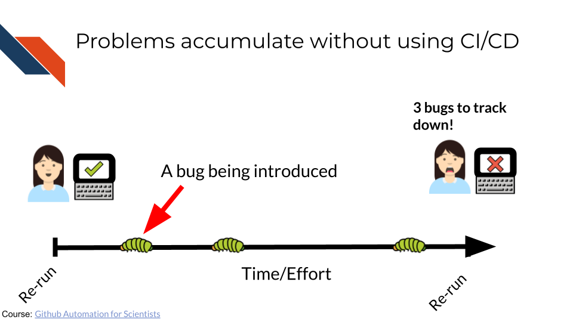
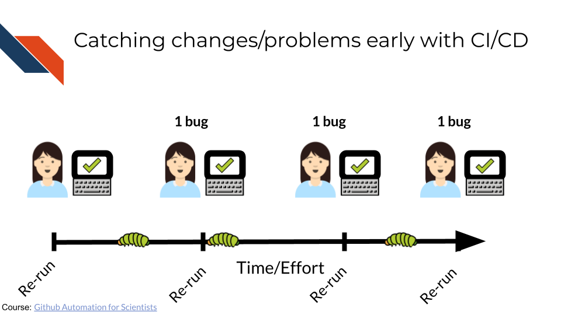
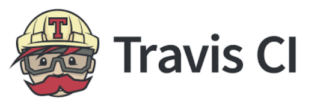
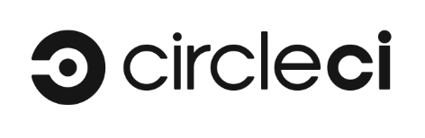

CI/CD
Tools and Tips
{kind=link}
Last updated: January 16, 2026
What is CI/CD?
CI/CD = Continuous Integration/Continuous Deployment
The idea is to test your code as you develop it and to automatically deploy your code or deliver results.
This could be rendering a report automatically for a data analysis or automatically sending software updates to users.
In other words, if you make a change to your code, you can run your code to see how it works with different conditions and environments.
This can simulate:
- Different software users

- Different data analysis contexts

Benefits of CI/CD
- Catch software and data analysis bugs earlier!
- Enhance public trust in your code/software
- Determine if your software updates will work for users on different machines
- Determine if your data analysis code still has the expected outcomes with different permutations
- Improve your efficiency by rendering files or running code in a more automated way
- More easily share results and updates!


Implementing CI/CD
CI/CD relies on automation tools (see below), but it typically also uses other infrastructure, such as documentation, version control, and containers or virtual machines.
- Lab members need to know what working standards are required
- Onboarding documents like these can help:
- Version control is the process of tracking changes over time
- There are several tools for version control, (including GitHub, GitLab, Bitbucket).
- GitHub is one of the most commonly used by researchers.
- Containers or virtual machines enable us to run code in different computing
environments
- In simple terms, a computing environment is all the specific software for a given computer.
- Check out our ITN course about containers!
CI/CD Tools
The following tools can be used for CI/CD.
| Tool | Price | Custimizability | Integration | Tutorials |
|---|---|---|---|---|
|  | Free for public repos | Low | GitHub, GitLab, Bitbucket | Travis CI Guide |
|  | Free for public repos | High | GitHub, GitLab, Bitbucket | CircleCI Guide |
| Free for public repos | High | Intended for GitLab, GitHub, Bitbucket | GitLab CI Guide | |
| Free for public repos | High | Intended for GitHub, GitLab with some effort | ITN Course on GitHub Actions | |
| Free for public or private repos (other potential costs) | Very high | GitHub, GitLab, Bitbucket | Jenkins Guide |
Resources
- Check out this explanation of CI/CD
- This novel about CI/CD called The Phoenix Project might be helpful. Check out this excerpt!
- These ITN courses can get you started with GitHub: Introduction to Reproducibility & Advanced Reproducibility
- This ITN course can get you started with Containers: Containers for Scientists
- This ITN course can get you started with CI/CD using GitHub Actions: GitHub Automation for Scientists